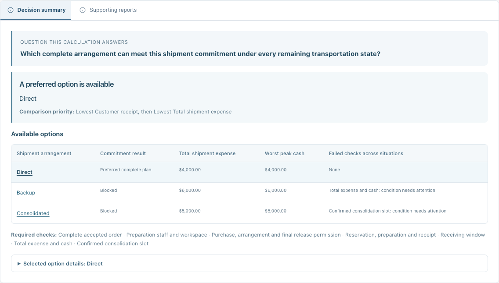
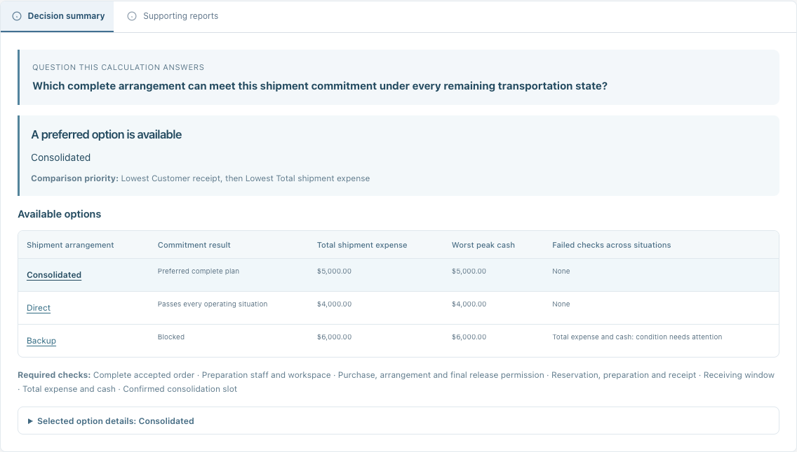
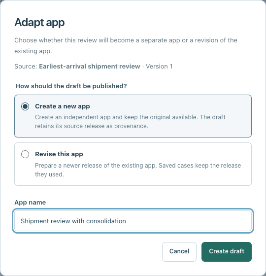
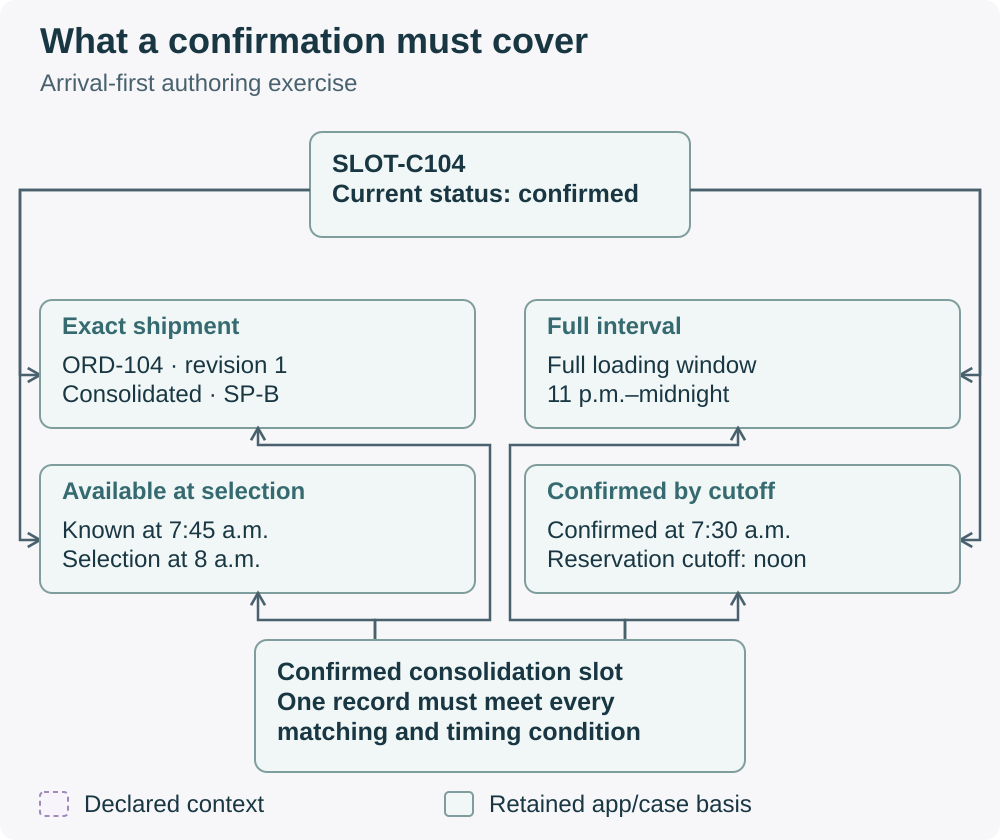
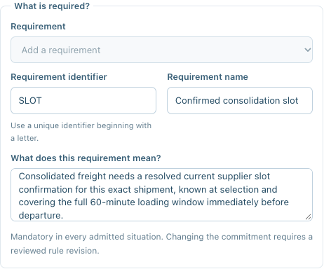
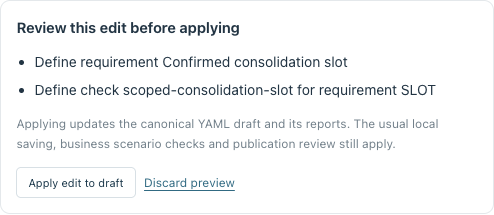
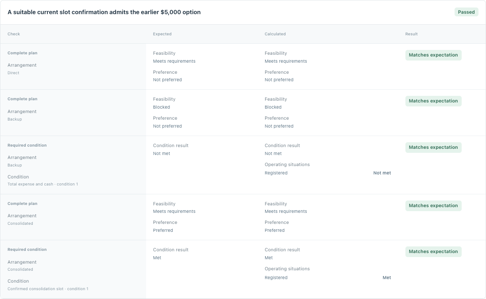
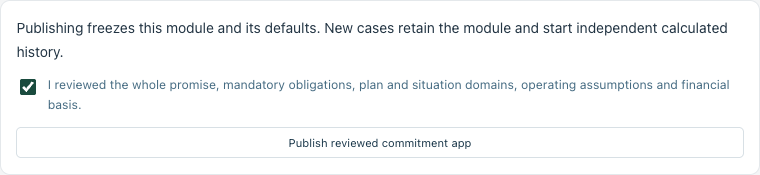
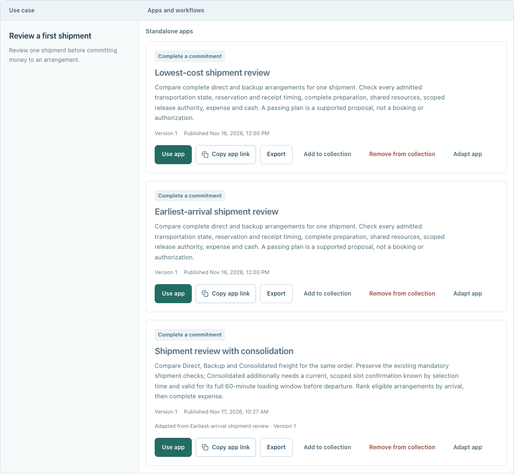

Maya has a recommendation she can defend: Direct will deliver the order within the receiving window for $4,000. Finance has set a $5,000 expense limit. The launch lead still wants the goods earlier, but the $6,000 Backup option is over budget.
Then a carrier offers Consolidated: $5,000, arriving Thursday at 6 p.m. It would buy 18 hours for another $1,000. Maya wants to take that possibility back to the launch team. Operations needs something else first: confirmation that the shipment has a loading slot.
In this example, a loading slot is a reserved time window for loading Maya’s shipment onto the carrier’s vehicle. It helps the warehouse and carrier coordinate loading so her goods can join the consolidated service before it departs.
This follows Maya’s original shipment review and its tighter-budget exercise. The people, quotes and new slot requirement are fictional teaching inputs. The business references and limits of the example are in Sources and scope.
This authoring walkthrough preserves the earlier arrival-first standalone review to show exactly what adding a service and its prerequisite changes. It is separate from the current first-shipment calculation workflow, which uses supplied inputs and Calculate / Recalculate without reviewer signoff. Saved cases retain their original definitions. The later operating release adopts cost first among complete arrangements that meet the promise. The two releases answer different priority questions; publishing this tutorial’s app does not silently change either one. The series guide separates this authoring branch from the cost-first operating continuation.
A quote is an option. Confirmation is a requirement.
The shipment still contains 100 cases. Both shipping locations are recorded as transportation-registered, and the receiving window still runs from Thursday, November 19 at noon to Friday, November 20 at 5 p.m. All times use UTC−06:00.
| Complete shipment option | Expense | Arrival | What needs attention |
|---|---|---|---|
| Direct · SP-A | $4,000 | Friday, November 20 at noon | Passes the original requirements |
| Backup · SP-B | $6,000 | Thursday, November 19 at noon | Exceeds the $5,000 expense limit |
| Consolidated · SP-B | $5,000 | Thursday, November 19 at 6 p.m. | Needs a confirmed loading slot |
The review favors the earliest arrival among options that pass, with expense breaking ties. Cash available remains $6,500. Consolidated uses the already registered SP-B; its slot confirmation is separate from registration, spending authority and release permission.
A quote supplies facts about a service. Admitting that service as a new alternative expands the review, and requiring a particular confirmation changes its reusable rules. This is a requirements-engineering task: agree what the service must establish, then make that condition explicit and testable. The app author maintains the reusable review so colleagues cannot accidentally treat an unconfirmed service as ready. Later, entering a confirmation changes a case’s evidence; it leaves the published requirement intact.
The same requirement. Two different supported proposals.
Shared basis. One frozen arrival-first tutorial app; the same three quotes; 100 cases; $5,000 expense limit; $6,500 cash limit. Earliest eligible arrival is the unchanged priority.
What changes. The second case adds one confirmed slot record for the exact order, service and full loading window. The case identifier also differs; published rules, prices, permissions and timing parameters are identical.
A · No current slot record
Propose Direct · $4,000 · Friday noon
- Slot confirmation
- No record supplied
- Priority
- Earliest eligible arrival, then expense


Maya has a passing option. The new Consolidated quote cannot pass until the team has the required confirmation.
B · A valid scoped slot record
Propose Consolidated · $5,000 · Thursday 6 p.m.
- Slot confirmation
- SLOT-C104; confirmed 7:30 a.m.; known 7:45 a.m.
- Covered loading window
- 11 p.m.–midnight; exact shipment scope


Under this tutorial’s arrival-first priority, the confirmed service becomes preferred. The launch owner still justifies the premium and the responsible owner authorizes it.
What this means for the decision. The author defines what support the service needs. Colleagues then get different, explainable findings when that support is absent or present. This arrival-first tutorial is separate from the cost-first operating app.
Without a current confirmation, Maya can put Direct forward at $4,000. With a genuinely received confirmation covering the shipment’s full loading window, Consolidated also passes and the unchanged arrival-first tutorial prefers it at $5,000. The launch owner still needs to justify the extra $1,000 and authorize the proposed response.
Start with the supported answer and compact arrangement comparison. Select a row to inspect the condition behind it, then open supporting details only when you need the record scope or timing basis. Inspecting Consolidated does not select it for shipment or authorize its additional expense.
The team’s authoring task is to make this distinction reliable: a quote alone must not count as a confirmed service. The steps below implement and test that requirement. This pair holds the published rules and priority fixed; it adds the scoped record.
Keep the original review. Adapt a new app.
The team starts from the existing Earliest-arrival shipment review. They keep the original app and its saved cases available while preparing a separate Shipment review with consolidation.
The bounded shipment commitment decision pattern stays the same: compare complete arrangements, establish which meet the requirements and apply the agreed priority before people commit. Here the author adapts its supporting assessment app, rather than creating a new workflow. Hermod supplied the reusable assessment language and review structure; the team specifies the service’s additional condition and reviews the resulting behavior.
| Part of the review | Retained or changed |
|---|---|
| Original requirements | Retain all 18 shipment checks. |
| Alternatives and records | Add Consolidated, its quote and corresponding permission records; identify the three reviewed options. |
| Slot prerequisite | Add the scoped confirmation requirement and its input definitions. |
| Comparison priority | Retain earliest eligible arrival, with expense breaking ties. |
| Starting expense limit | Set the new app’s default to $5,000 deliberately; a draft does not inherit Maya’s edited case. |
- Open the original arrival-first review. Decision Lab creates or reuses the Order fulfillment collection automatically.
- Go to Collections → Order fulfillment and choose Adapt app on the arrival-first review.
- Keep Create a new app selected. Enter Shipment review with consolidation as the app name and choose Create draft.


The new draft records which published app it came from and has its own app identity. It begins with that app’s published defaults, including the original $6,500 expense limit. It does not inherit Maya’s edited $5,000 working case. The team deliberately makes $5,000 the new example’s starting expense limit.
Prepare the third option and its records.
To concentrate on the new requirement, this walkthrough provides a prepared starting model. It adds Consolidated’s quote and corresponding permission records, defines the confirmation fields and loading window, and limits the review to the three authored options. The original 18 shipment checks and arrival-first ranking remain intact.
The prepared source supplies the business changes; your draft also contains its own generated adaptation record. Combine them before replacing the editor contents:
- In the draft’s Canonical YAML tab, copy the entire
module.metadata.appAuthoringblock, including its nested source information and creation time. - Open the prepared starting model in a text editor. Insert your copied
appAuthoringblock insidemodule.metadata, alongsidecatalog, preserving the indentation. Keep your draft’s generated values exactly. - Replace Canonical commitment model YAML with the combined source. Wait for Reports current and Saved locally.
This step uses the source editor. The generated block preserves the new draft’s link to its original release; the business declarations supply the third quote and its input definitions. The guided controls below add the slot requirement itself.
At this unfinished stage, the report can prefer Consolidated even with no confirmation. Its quote meets the old rules. That exposes the missing prerequisite: adding a service does not automatically teach the review what the service requires.
Say exactly what a confirmed slot means.
The carrier’s loading window is Tuesday, November 17 at 11 p.m. through Wednesday at midnight, immediately before departure. A confirmation must cover that whole hour, match the shipment, and already be known at the 8 a.m. selection time. It must also have been confirmed by the noon reservation cutoff.
“Confirmed” must mean enough for this decision to rely on it. A record for the wrong order revision or ship point does not establish a slot for Maya’s shipment; partial window coverage does not establish the full hour. This applies computational hermeneutics to a practical handoff: make the claim, scope and conditions explicit before another part of the review relies on the finding. People still authenticate the carrier’s record; a matching field is not proof that its contents are true.


- Choose Requirements & inputs → Requirements & checks, then Add a requirement.
- Use
SLOTas the requirement identifier and Confirmed consolidation slot as its name. In What does this requirement mean?, describe the exact shipment, current confirmation, timing and full loading-window coverage. - Set the check identifier to
scoped-consolidation-slot. Choose Require a matching record and use theslotConfirmationstable. - Use Add a record match for the shipment and status fields, and Add a record test for the timing comparisons. Under Apply this check to, choose the selected
arrangementvalueconsolidated.


The condition applies to Consolidated. Direct and Backup keep their existing operating requirements. A separate policy in the starting model rejects unfamiliar option identities, so adding a differently named service cannot bypass the new rule.
The matching fields and timing tests used here
All matches and tests must hold on the same current confirmation record.
| Confirmation field | Must match |
|---|---|
arrangement | The selected choice.arrangement |
shipPoint | The option’s derived.shipPoint |
orderId, orderRevision | The corresponding shipment parameters |
recipient, shipDate, profileVersion | The corresponding shipment parameters |
status | The text value confirmed |
confirmedAt ≤ parameter.reservationDeadline: confirmed by the reservation cutoff.confirmedAt ≤ knownAt: confirmation exists before it is known.knownAt ≤ parameter.actionReady: available when the option can be selected.validFrom ≤ derived.slotStart: coverage begins by the start of loading.validUntil ≥ derived.departure: coverage lasts through the end of loading.
The model calculates slotStart as departure minus 60 minutes. The duration is an authored rule. There is no case checkbox that turns off the confirmation requirement. The completed model retains the full declarations.
Choose Preview requirement edit. Review the requirement, its applicability and the matching-record condition, then choose Apply edit to draft.


With no confirmation recorded, Consolidated now fails its slot check. Direct remains available. The new review has 20 mandatory checks: the original 18, the policy identifying reviewed options, and the scoped slot condition.
The confirmation table is a resolved current-status register, with at most one row per arrangement. The logistics coordinator reconciles supplier messages before entering the current status. A cancellation replaces the old status; unresolved disagreement is recorded as conflicting. Both fail the check. Duplicate current rows are invalid inputs. The review does not reconcile an event history for the team.
Test the decision the team expects.
One passing example would be too easy. The team needs to know whether the review also refuses the service when the confirmation belongs to another shipment, arrives too late or has been cancelled.
Open Business scenarios, choose Upload scenarios and load the supplied business-scenario suite. Choose Run business scenarios. Each scenario includes complete case inputs and an expected result written for this example; the expected answers are not copied from the calculated reports.
| Situation tested | Expected result |
|---|---|
| Original two options under the $5,000 limit | Direct remains preferred; Backup remains over budget. |
| Three options, $5,000 limit, no confirmation | Consolidated fails its new condition; Direct is preferred. |
| Valid current confirmation | Consolidated passes and becomes preferred. |
| Wrong order revision, ship point or ship date | The supplied record does not establish the slot requirement. |
| Late confirmation, late knowledge, expired or incomplete coverage | The slot condition fails. |
| Cancelled or conflicting current status | The slot condition fails. |
| An unfamiliar service is added | It fails the reviewed-option policy. |


All 14 supplied scenarios pass against this draft. The editor shows expected and calculated outcomes together. These examples support the team’s review of the change; they do not establish that every possible business condition has been modeled.
If the model or scenario suite changes, rerun the checks. Once a suite is configured, its current checks must pass before publication. Keep the suite with the authoring materials: it is a separate file, not part of the published app package.
Put the expanded review beside the originals.
Before publishing, the team reviews the whole shipment commitment: the new quote and permissions, the $5,000 default expense limit, the full loading-window requirement, the retained checks and the expected results. For this authoring exercise, the draft still favors earliest eligible arrival; its preference remains unchanged.
- Choose Publish app. Complete the review acknowledgement and choose Publish reviewed commitment app.
- In Choose a collection, select Order fulfillment and the Review a first shipment use case, then choose Add to collection.


The result is a new published app in the same collection. The original arrival-first review remains available, along with any other installed reviews and their existing cases. The collection pictured below also includes the original cost-first review. Publishing the adapted app does not move existing cases onto the new rules.


This publication is local to the browser’s collection. The app’s Copy app link can give a colleague the frozen app and its supplied starting facts. A shared Marketplace release is a separate action.
Give Maya a decision she can act on.
Open the completed example to use the same published review. It creates or reuses Order fulfillment automatically and begins with the $5,000 expense limit, $6,500 cash limit and no slot confirmation.
Wait for Reports current, then choose Reports → Decision summary. The decision screen starts with the finding and comparison priority, followed by Available options. Direct passes and is preferred. Backup exceeds the expense limit. Consolidated fits the limit but fails the slot requirement. Select Consolidated and expand Selected option details when you need its requirement results.
For the second scenario, the supplier confirms the exact slot at 7:30 a.m. and Maya receives the record at 7:45 a.m., before the 8 a.m. selection time. It covers the full 11 p.m.–midnight loading window for this shipment.
- Download the supplied confirmed case inputs.
- In the working case, choose Inputs → YAML. Replace Canonical commitment case YAML with the file’s contents. This is the complete case, rather than a single selected form section. It changes the case inputs, leaving the published rules intact.
- Wait for Reports current and return to Reports → Decision summary. Compare the new preferred option and the conditions shown for all three arrangements.
The paired decision views above show both results under this same authored release: Direct without the record, Consolidated with it. Compare the slot condition and preferred option; every other business input is retained.
Reading the report and restoring the example
The decision comparison formats expenses as dollars. The original monetary and timing values remain available under Reports → Supporting reports; they describe the same case and calculation.
Select an option and open Selected option details for its complete assignment, requirements and failed conditions. Switch between Decision summary and Supporting reports without losing the report selection or open details. To start again without confirmation, choose Inputs, expand Work with Excel and select Start another case. Reopening the link in the same tab can resume your edited case.
Maya now has an earlier option she can take back for approval. With the recorded confirmation, Consolidated meets the modeled requirements and is preferred under the arrival-first priority. Direct still passes. Backup remains over the expense limit.
The launch owner can decide whether 18 hours is worth the extra $1,000. Finance can see that the proposal stays within the stated limit. Operations can inspect the specific confirmation rather than being asked to rely on the quote alone. A missing or cancelled confirmation changes the available recommendation instead of disappearing in a footnote.
The team has reused the original shipment checks and added the condition that this service needs. Responsible owners still authorize the spend, arrange the slot and book the shipment. The report checks the recorded loading-window coverage; it does not schedule dock capacity or execute those actions.
For ongoing operations, the team publishes a separate cost-first app and operating workflow. Direct remains the preferred $4,000 response while it can still be booked and meet the promise. After its 11 a.m. carrier cutoff, the $5,000 Consolidated response can become preferred while its own noon window and scoped support remain current. Earlier arrival alone does not justify the premium. This operating release retains the slot requirement taught here, adds the current quote and booking-window checks, and preserves the earlier tutorial release.
Next, follow the CLI queue as changed orders reveal missing capacity, old permissions and confirmations that need replacement. Then see Maya continue the same native review in the SDK desk, record a supported choice, and keep actual authority, reservation and delivery evidence separate. Those records support checking the original promise; neither accepting a finding nor selecting a plan performs the shipment.